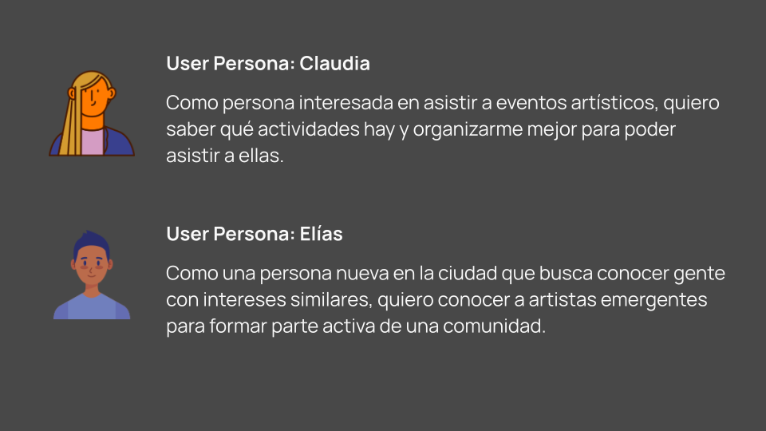

Art&Connect.app
UX Research
Metodologías AGILES
Propuesta de Valor
2024
BRIEF:
1. Contexto:
Las grandes ciudades españolas como Madrid, Barcelona, Valencia, Bilbao, etc. ofrecen una amplia variedad de eventos artísticos y culturales, pero existe un desequilibrio: eventos masificados con largas colas y poca visibilidad para iniciativas
2. Problemas a resolver:
Los usuarios se enfrentan a un user path excesivamente largo a la hora de informarse de dichos eventos:
- Busqueda manual a través de navegador y RRSS
- Comprobar individualmente disponibilidad, precio, ubicación y horarios
- Resultado: desmotivación y menor asistencia a eventos.
3. Objetivo:
Hacer match entre actividades y usuarios interesadas en ellas para así aumentar y desgentrificar la asistencia a los mismos.
[001] User Pain Points

1
Buscar manualmente en RRSS/navegador eventos y que la información esté desactualizada y/o desordenada
2
Comprobar uno a uno si el evento es de pago o no
3
Salir de la búsqueda para entrar a Google Maps a comprobar su ubicación
4
No poder compartir el link con personas que no tienen perfil en esa red social

[002] User Personas
[003] User Stories

[004] User Journey